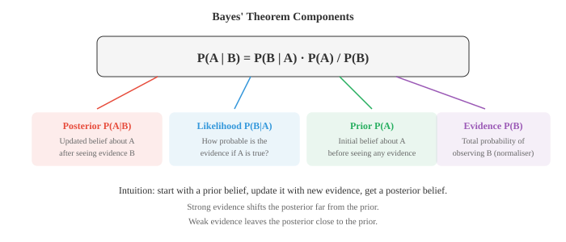

概率概念¶
概率论将不确定性形式化，并提供在不确定性下进行推理的规则。本文涵盖样本空间、事件、概率公理、条件概率、独立性、贝叶斯定理，以及频率派与贝叶斯派的诠释——这是 ML 中每个生成模型和判别模型背后的数学框架。
-
概率为事件赋予一个 0 到 1 之间的数值，衡量其发生的可能性。
-
概率为 0 意味着不可能，1 意味着确定，0.5 意味着抛硬币。
-
概率有两种主要诠释。频率派认为概率是长期相对频率：抛一枚公平硬币 10,000 次，正面朝上大约会出现 50% 的时间。
-
贝叶斯派认为概率是一种信念程度：你可以说明天有 70% 的概率下雨，即使明天只会发生一次。
-
两种诠释使用相同的数学规则。区别在于哲学层面，但在 ML 中至关重要。频率派方法给出点估计，贝叶斯方法给出参数的完整分布。
-
样本空间 \(S\) 是实验所有可能结果的集合。抛硬币：\(S = \{H, T\}\)。掷骰子：\(S = \{1, 2, 3, 4, 5, 6\}\)。
-
事件是样本空间的任意子集。"掷出偶数"是事件 \(A = \{2, 4, 6\}\)，是 \(S\) 的子集。
-
当所有结果等可能时，事件的概率就是简单的计数（见第 01 篇）：
- 对于偶数示例：\(P(\text{偶数}) = \frac{3}{6} = 0.5\)。

- 事件 \(A\) 的补集，记作 \(A'\) 或 \(A^c\)，是 \(S\) 中不属于 \(A\) 的所有元素。由于每个结果要么在 \(A\) 中，要么不在：
-
补集通常是更简便的方法。不必去数 5 次抛硬币中至少一次正面的所有方式，只需数出没有正面的唯一方式再相减：\(P(\text{至少一次正面}) = 1 - P(\text{全反面}) = 1 - (0.5)^5 = 0.969\)。
-
如果两个事件不能同时发生，它们是互斥的（不相交的）：\(A \cap B = \emptyset\)。在一次掷骰子中，掷出 2 和掷出 5 是互斥事件。
-
互斥事件的加法规则很简单：
- 当事件可能重叠时，需要使用一般加法规则以避免对交集的重复计数：
-
这与计数中的容斥原理相对应。上面的韦恩图说明了原因：紫色区域（交集）在 \(P(A)\) 中被计算一次，在 \(P(B)\) 中又被计算一次，所以需要减去一次。
-
联合概率 \(P(A \cap B)\) 是 \(A\) 和 \(B\) 同时发生的概率。在一副扑克牌中，\(P(\text{红色} \cap \text{国王}) = \frac{2}{52}\)，因为有 2 张红色国王。
-
边缘概率是不考虑其他事件时单个事件的概率。\(P(\text{红色}) = \frac{26}{52} = 0.5\) 是一个边缘概率。如果你有两个变量的联合分布，边缘概率通过对另一个变量求和（或积分）得到。
-
条件概率回答：已知 \(B\) 已经发生，\(A\) 发生的概率是多少？我们将样本空间从 \(S\) 缩小到 \(B\)，然后问 \(B\) 的多大比例也属于 \(A\)：

-
示例：你抽到一张牌，有人告诉你它是红色的。它是国王的概率是多少？有 26 张红牌，其中 2 张是国王，所以 \(P(\text{国王} | \text{红色}) = \frac{2}{26} = \frac{1}{13}\)。用公式验证：\(P(\text{国王} \cap \text{红色}) / P(\text{红色}) = \frac{2/52}{26/52} = \frac{1}{13}\)。
-
如果知道一个事件发生与否不影响另一个事件的概率，则两个事件是独立的。形式上：
-
等价地，\(P(A | B) = P(A)\)。分别抛两枚硬币是独立事件。不放回地抽两张牌不是独立的（第一次抽牌改变了剩余的牌）。
-
独立性是一个巨大的简化工具。对于独立事件，联合概率可以分解为乘积，使计算变得可行。许多 ML 模型（例如 Naive Bayes）假设特征之间相互独立，正是因为这种简化。
-
任意两个事件的乘法规则是对条件概率公式的重新整理：
-
对于独立事件，由于条件概率等于边缘概率，这简化为 \(P(A \cap B) = P(A) \cdot P(B)\)。
-
贝叶斯定理是概率论中最重要的结论之一，也是贝叶斯 ML 的基础。它让你反转条件概率的方向：
- 该定理直接由将 \(P(A \cap B)\) 用两种方式表示推导而来：\(P(B|A) \cdot P(A) = P(A|B) \cdot P(B)\)，然后求解 \(P(A|B)\)。

-
每个组成部分都有一个名称：
- Prior \(P(A)\)：在看到证据之前的初始信念
- Likelihood \(P(B|A)\)：假设 \(A\) 为真时，观察到证据的概率
- Evidence \(P(B)\)：观察到证据的总概率，起归一化作用
- Posterior \(P(A|B)\)：看到证据后更新的信念
-
让我们来看一个经典的医学诊断示例。假设某疾病影响 1% 的人口。该疾病的检测准确率为 95%：能正确识别 95% 的患者（灵敏度），并能正确识别 90% 的健康人（特异度）。
-
你检测结果为阳性。你实际患病的概率是多少？
-
设 \(D\) = 患有该疾病，\(+\) = 检测阳性。
- Prior：\(P(D) = 0.01\)
- Likelihood：\(P(+ | D) = 0.95\)
- 假阳性率：\(P(+ | D') = 0.10\)
-
我们需要 \(P(+)\)。根据全概率定律：
- 现在应用贝叶斯定理：
-
尽管检测"准确率为 95%"，阳性结果实际上只有约 8.8% 的概率真正患病。Prior 至关重要。由于疾病很罕见，大多数阳性结果都是假阳性。这对 ML 中的任何分类问题都是关键洞见：当类别不平衡时，单纯的准确率会产生误导。
-
全概率定律将样本空间划分为互斥且穷举的事件 \(B_1, B_2, \ldots, B_n\)，并将任意事件 \(A\) 表示为：
-
这正是我们在医学示例中用来计算 \(P(+)\) 的方法：我们将人群分为"患病"和"未患病"两类。
-
概率链式法则将乘法规则推广到任意数量的事件：
-
每个因子都以之前所有事件为条件。这是自回归语言模型的核心：一个句子的概率是每个词在给定所有前驱词条件下的概率之积。
-
条件独立性意味着两个事件在给定第三个事件时相互独立。如果：
则 \(A\) 和 \(B\) 在给定 \(C\) 时条件独立。
-
事件可能是边缘相关的，但在给定条件后独立，反之亦然。例如，两个学生的考试成绩可能相关（两者都取决于考试难度），但给定考试难度后，他们的成绩是独立的。
-
条件独立性是贝叶斯网络等图模型背后的关键假设。它让你将复杂的联合分布分解为可处理的小块，使推断在计算上可行。
编程任务（使用 CoLab 或 notebook）¶
-
模拟医学诊断问题。生成 100,000 人的人群，应用疾病患病率和检测准确率，并验证贝叶斯定理给出正确的 posterior。
import jax import jax.numpy as jnp key = jax.random.PRNGKey(42) n = 100_000 # 生成人群 k1, k2 = jax.random.split(key) has_disease = jax.random.bernoulli(k1, p=0.01, shape=(n,)) # 生成检测结果 k3, k4 = jax.random.split(k2) # 灵敏度: P(+|D) = 0.95，特异度: P(-|D') = 0.90 test_positive = jnp.where( has_disease, jax.random.bernoulli(k3, p=0.95, shape=(n,)), jax.random.bernoulli(k4, p=0.10, shape=(n,)) ) # 在检测阳性的人中，实际患病的比例是多少？ positives = test_positive.astype(bool) true_positives = (has_disease & positives).sum() total_positives = positives.sum() print(f"检测阳性总数: {total_positives}") print(f"真阳性数量: {true_positives}") print(f"P(患病 | 阳性) = {true_positives / total_positives:.4f}") print(f"贝叶斯公式: {0.95 * 0.01 / 0.1085:.4f}") -
通过模拟验证加法规则。生成具有已知概率和重叠的随机事件 A 和 B，然后验证 \(P(A \cup B) = P(A) + P(B) - P(A \cap B)\)。
import jax import jax.numpy as jnp key = jax.random.PRNGKey(0) n = 200_000 k1, k2 = jax.random.split(key) # 事件：A = 值 < 0.4，B = 值 < 0.6（重叠部分为 < 0.4） vals_a = jax.random.uniform(k1, shape=(n,)) vals_b = jax.random.uniform(k2, shape=(n,)) A = vals_a < 0.4 B = vals_b < 0.6 p_a = A.mean() p_b = B.mean() p_a_and_b = (A & B).mean() p_a_or_b = (A | B).mean() print(f"P(A) = {p_a:.4f}") print(f"P(B) = {p_b:.4f}") print(f"P(A ∩ B) = {p_a_and_b:.4f}") print(f"P(A ∪ B) 模拟值 = {p_a_or_b:.4f}") print(f"P(A) + P(B) - P(A∩B) = {p_a + p_b - p_a_and_b:.4f}") -
演示条件概率随证据的变化。模拟掷两个骰子，计算 \(P(\text{点数之和} = 7)\)，然后计算 \(P(\text{点数之和} = 7 | \text{第一个骰子} = 3)\)。
import jax import jax.numpy as jnp key = jax.random.PRNGKey(1) n = 500_000 k1, k2 = jax.random.split(key) d1 = jax.random.randint(k1, shape=(n,), minval=1, maxval=7) d2 = jax.random.randint(k2, shape=(n,), minval=1, maxval=7) total = d1 + d2 # 无条件概率 p_sum7 = (total == 7).mean() print(f"P(和=7) = {p_sum7:.4f}（精确值: {6/36:.4f}）") # 给定第一个骰子 = 3 的条件概率 mask = d1 == 3 p_sum7_given_d1_3 = (total[mask] == 7).mean() print(f"P(和=7 | d1=3) = {p_sum7_given_d1_3:.4f}（精确值: {1/6:.4f}）") -
将贝叶斯定理实现为一个函数，并用它迭代更新信念。从硬币偏置的均匀 prior 开始，在观察到每次抛掷后更新。
import jax.numpy as jnp import matplotlib.pyplot as plt def bayes_update(prior, likelihood): """将 prior 乘以 likelihood 并归一化。""" posterior = prior * likelihood return posterior / posterior.sum() # 离散化可能的偏置值 theta = jnp.linspace(0, 1, 200) prior = jnp.ones_like(theta) # 均匀 prior prior = prior / prior.sum() # 观察到的抛掷结果：1=正面，0=反面 flips = [1, 1, 0, 1, 1, 1, 0, 1, 0, 1] plt.figure(figsize=(10, 5)) plt.plot(theta, prior, "--", color="#999", label="prior") for i, flip in enumerate(flips): likelihood = theta if flip == 1 else (1 - theta) prior = bayes_update(prior, likelihood) if i in [0, 2, 4, 9]: plt.plot(theta, prior, label=f"第 {i+1} 次抛掷后", linewidth=2) plt.xlabel("硬币偏置 θ") plt.ylabel("信念（归一化）") plt.title("贝叶斯更新：关于硬币偏置的信念") plt.legend() plt.grid(alpha=0.3) plt.show()